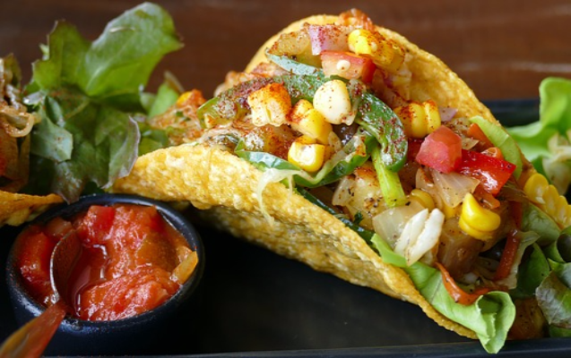

Invest in high quality food containers. Make sure you get containers that are microwave safe.
Choose recipes ahead of time with healthy fruit and veggie options. Pick your favorite, healthy foods and make them your daily staples. Make sure you get a mix of:
Veggie protein
Complex carbs
Healthy fats
Pick a day of week to do your groceries. Usually this is best done on Sunday before the work week, but find which day works best for you.
Prep meals for the week. Refrigerate or freeze the food in separate containers. Make sure you have 3 meals a day, as well as healthy snacks.
Breakfast
Lunch
Dinner
Snacks
Repeat weekly!This will soon become routine and you won't even have to think before doing it.
For more great vegan food prep ideas, visit:
Pinterest
Daily Smoothie/Juice
Two of the 4 smoothie recipes from Dani's Youtube page are below. For the remaining two, watch the video and "Like" and "Subcribe" She also has great "juicing" videos!
Tropical Fruit Smoothie
1 navel orange
1 cup of baby spinach
1/2 cup coconut milk
1/2 cup of frozen pineapple
1/2 frozen banana
Blend until smooth and creamy. Enjoy!
Immunity Smoothie
1/2 green apple
3 leaves of romaine lettuce
1/4 cup cucumber
1/4 of an avocado
1/2 teaspoon of fresh ginger
1/2 cup parsley leaves
1 cup of coconut water
Blend until smooth and creamy.Tip: add ice to your blender for a frozen smoothie.Enjoy!
For more great breakfast smoothies, visit:
Paleo Hacks
Daily Meals

Roasted Vegetable Tacos
Ingredients:
2 tablespoons olive oil
2 medium zucchini, chopped
1/2 medium onion, sliced thinly
1/2 red bell pepper
2 garlic cloves, minced
1 large Anaheim or Hatch chile, seeded & chopped
1/2 jalapeno chile, seeded & chopped
1/4 teaspoon cumin, oregano and chile powder
1 medium tomato, chopped
4 corn tortillas
A few sprigs of cilantro
Salt and pepper to taste
Steps:
Heat the oven to 425 degrees F. Line a large low sided baking sheet with parchment paper or foil.
Place zucchini, onion, peppers, and tomatoes onto the baking sheet. Drizzle with olive oil.
Scatter with spices and a few pinches of salt/pepper over the vegetables. Toss to coat.
Roast, stirring occasionally, in the oven until tender, about 25 minutes.
Toast corn tortillas and fill with veggies. Enjoy!